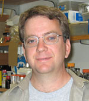
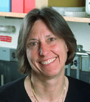
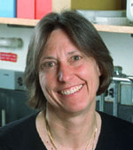

News Archives : 2005 : Chromosome and Replisome Dynamics in E. coli
by David Bates
June 17, 2005
Another finding is that the chromosome experiences a very specific and predictable change in behavior during the final stages of cell division. After the end of DNA replication up to the time of cell division, sister chromosomes remain relatively static or "frozen" with a characteristic terminus-in / origin-out configuration. Thus, sister chromosomes are oriented tail-to-tail (the terminus being the last part to replicate, and origins being the first) for the later part of the cell cycle. The chromosome masses, or nucleoids, remain in close contact with the midcell division plane (septum) (Figure 1). Concurrent with cell division, however, the nucleoid moves dramatically to the middle of each daughter cell (Figure 2). Origin and terminus loci move in line with the nucleoid, and immediately their positions become highly dynamic, or "unfrozen". The origin then moves to a fixed assembly of replication proteins (replisome) at midcell and DNA replication is initiated. The authors hypothesize that replication initiation in the next round is triggered or "licensed" by the completion of cell division via these changes in the nucleoid. Such a system ensures a 1:1 relationship between replication and division.
 

Authors David Bates and Nancy Kleckner